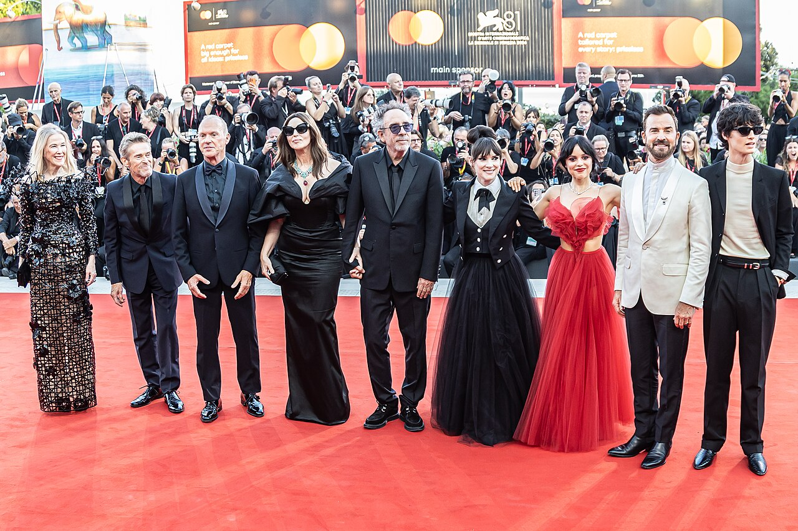
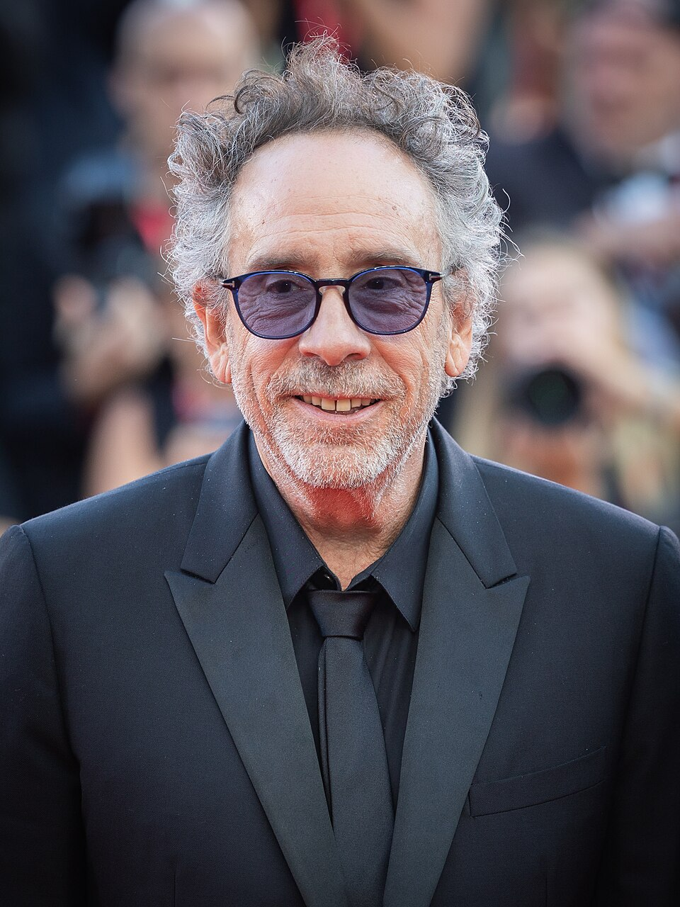

HALLOWEEN · SVIJET NEOBIČNE MAŠTE
Tim Burton
Svijet u kojem neobično postaje nezaboravno.
Vremenska crta
Umjetnik iza neobičnih priča

Tim Burton je američki režiser, producent i likovni umjetnik. Njegov filmski izraz povezuje fantaziju, crni humor i likove koji se teško uklapaju u svoju okolinu.
Crtež je važan dio njegovog stvaralaštva: od ranih skica i animiranih filmova do dugometražnih priča. Ova vremenska crta izdvaja dio njegovog života i karijere do 2024. godine.
Rani uspjeh:
- 1958. — Rođen je 25. augusta u Burbanku, u Kaliforniji.
- 1977. — Upisuje program animacije na California Institute of the Arts (CalArts).
- 1979. — Počinje raditi kao umjetnik u Disneyju.
- 1982. — Režira Vincent, crno-bijeli kratki stop-motion film. Pripovjedač je Vincent Price.
- 1984. — Snima kratki igrani film Frankenweenie.
- 1985. — Njegov prvi dugometražni režiserski film je Pee-wee’s Big Adventure.
Prepoznatljivi filmski svjetovi
- 1988. — Režira Beetlejuice, spoj fantazije i komedije s Michaelom Keatonom i Winonom Ryder.
- 1989. — Režira Batman, u kojem naslovnog junaka igra Michael Keaton.
- 1990. — Nastaje Edward Scissorhands, film s Johnnyjem Deppom i Winonom Ryder.
- 1993. — The Nightmare Before Christmas donosi njegovu priču i produkcijski rad. Film režira Henry Selick.
- 1994. — Režira Ed Wood, biografski film o istoimenom filmskom autoru.
- 1999. — U filmu Sleepy Hollow ponovo istražuje gotičku atmosferu i fantastične motive.
- 2003. — Režira Big Fish, priču koja povezuje porodične odnose i fantaziju.
- 2005. — Na velika platna dolaze Charlie and the Chocolate Factory i stop-motion film Corpse Bride.
Novi projekti i priznanja
- 2010. — Režira Disneyjev film Alice in Wonderland.
- 2012. — Vraća se priči Frankenweenie, ovaj put kroz dugometražni stop-motion film.
- 2022. — Izvršni je producent serije Wednesday i režiser prve četiri epizode prve sezone.
- 2024. — Režira Beetlejuice Beetlejuice, nastavak filma iz 1988. godine.
- 3. septembar 2024. — Dobija 2788. zvijezdu na holivudskoj Stazi slavnih, u kategoriji filma.
“Filmski stvaratelj Tim Burton dobio je 2788. zvijezdu na holivudskoj Stazi slavnih 3. septembra 2024. godine.”
* Podaci vremenske crte: Tim Burton — službena biografija, Festival de Cannes, filmografija Festivala de Cannes, Disney D23, Netflix Tudum i Hollywood Walk of Fame. Odabrani događaji obuhvataju period od 1958. do 2024. godine.